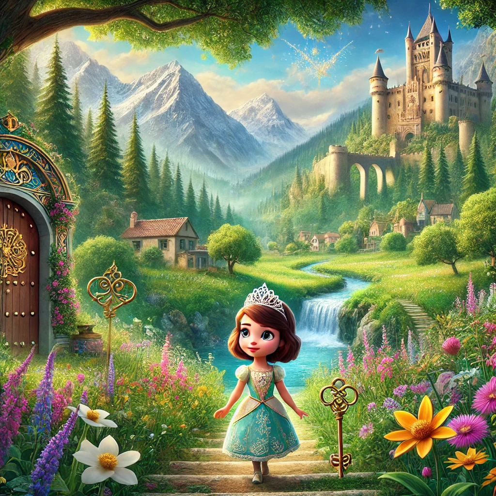

Sofía y la Llave Mágica

Había una vez, en un pequeño pueblo rodeado de montañas y ríos cristalinos, una niña llamada Sofía. Sofía era una niña muy especial porque tenía una gran imaginación y siempre soñaba con ser una princesa. Cada noche, antes de dormir, Sofía se ponía una tiara de plástico y se imaginaba viviendo en un gran castillo.
Un día, mientras jugaba en el jardín de su casa, Sofía encontró una vieja y misteriosa llave enterrada en la tierra. Intrigada, decidió guardarla, preguntándose qué podría abrir esa llave tan especial.
Esa noche, Sofía tuvo un sueño muy diferente. Soñó que la llave la llevaba a un lugar mágico, un reino lleno de colores y maravillas. Cuando despertó, decidió que debía encontrar ese lugar en la vida real.
Sofía siguió su corazón y exploró los alrededores de su pueblo, preguntando a todos si conocían algún lugar mágico que pudiera abrirse con su llave. Después de varios días de búsqueda, un anciano sabio le contó sobre un antiguo castillo oculto en las montañas, donde se decía que solo aquellos con un corazón puro podían entrar.
Decidida, Sofía emprendió el viaje hacia las montañas. Caminó por senderos ocultos y cruzó ríos hasta que finalmente llegó al castillo. Frente a la gran puerta de madera, sacó la llave y la insertó en la cerradura. La puerta se abrió con un suave crujido, y Sofía entró a un maravilloso salón lleno de luces y colores.
En el centro del salón, había un trono dorado. Al acercarse, una voz suave y melodiosa le dijo: "Sofía, siempre has soñado con ser una princesa porque tu corazón es puro y valiente. Hoy, tu sueño se hará realidad."
Con un destello de luz, Sofía se encontró vestida con un hermoso vestido de princesa y una tiara resplandeciente. Todos los habitantes del reino mágico la recibieron con alegría, y Sofía se convirtió en la princesa del castillo.
Desde ese día, Sofía vivió muchas aventuras en su nuevo hogar, ayudando a su gente y trayendo felicidad al reino. Y así, la niña que siempre soñaba con ser una princesa encontró su lugar en el mundo, demostrando que los sueños se pueden hacer realidad si seguimos nuestro corazón.
Y colorín colorado, este cuento se ha acabado. Buenas noches, Sofía. ¡Dulces sueños!